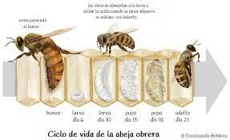

| Info. |
Extras |
 |
Suitable location:
Bees look for places that offer protection from the elements and predators, as well as access to necessary resources, such as water and food sources.
|
|
 |
Food resources:
Bees need a food source to survive and maintain their colonies. Hence the presence of diversity. of flowers and plants that provide pollen and nectar is essential.
|
|
|  |
Communication and organization:
Bees use a series of chemical and visual signals to communicate with one another: worker bees perform a dance known as the "recruitment dance" to signal to other bees the location of a food source.
|
|
|
Temperature and ventilation:
Maintaining the right temperature inside the colony is essential.
Bees use techniques such as wing flapping and huddling to maintain a constant temperature.
|
|